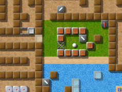

Level des MonatsJeden Monat werfen wir einen näheren Blick auf einen herausragenden Level. Herausragende Levels sind dabei solche, die sich durch die höchsten Bewertungen durch die Spieler auszeichnen, und dabei zugleich von genügend vielen Spielern auch bewertet wurden. Es ist also Ihre Wahl, die den Level des Monats bestimmt. Bitte werten Sie Levels, nachdem Sie sie gespielt haben, und vergessen Sie nicht, die Wertungen zusammen mit Ihren Spielergebnissen zum Ende eines jeden Monats uns zuzusenden. Sie können alle vorigen Level des Monats in unserem Archiv finden. Juni 2007: „Labyrinth of Puzzles“ von Jacob ScottIrgendjemand hier, der meint, alte Levels seien veraltet? Diesen Monat besuchen wir einen von Enigmas wahren Klassikern, einen Level, der direkt von Oxyd inspiriert wurde. Geschrieben vom produktivsten Levelautoren, den Enigma je gesehen hat, und der nur noch von Meinolf Schneider höchst persönlich übertroffen wird. Der Höhepunkt von Jacobs frühen Levels: Verirren Sie sich nicht im „Labyrinth of Puzzles“!

Enigma IV # 19
Tatsächlich hatte ich erwartet, dass „Labyrinth of Puzzles“ bereits Level des Monats Mai 2007 wird -- nur um dann vom Neuling „The Aztec Temple“ überholt zu werden. „Labyrinth of Puzzles“ hat bislang 7 Stimmen gesammelt, mit einem Durchschnitt von 9.00, wohingegen „The Aztec Temple“ erst von 3 Spielern bewertet wurde. In unserem Archiv können wir alle bisherigen Level des Monats mit ihren aktuellen Bewertungen vergleichen -- das wird ein spektakuläres Rennen zwischen dem Newcomer und dem Klassiker in den nächsten Monaten! „duffy - diabolically unfolding frustration for you“(frei übersetzt: duffy - diabolisches entfalten von frust für spieler) der nickname/dateiname(n) ist also offensichtlich mit großer sorgfalt gewählt worden. wir sprechen hier über den mann, der level geschrieben hat, die so böse sind, dass sie mir angst einjagen, wenn ich nur an sie denke. island of safety, die alien glyph trilogie, the document, security guards, bad nightmare, worse nightmare, double-spiral und natürlich das unvergessliche labyrinth of puzzles. [Interessante Mischung … Du hast die „Seed Puzzles“ vergessen! ;-] dieser mann ist schuld, dass ich stundenlang in den monitor starrte, um zu versuchen, einen weg zu finden, seine level besiegen zu können. ich hasse duffy! ich hasse ihn dafür, dass er die böswilligsten level geschrieben hat, die ich je in enigma gesehen habe … zur gleichen zeit liebe ich duffy! ich liebe ihn aus genau demselben grund. duffy hat mich in vielen arten und weisen inspiriert beim erstellen meiner eigenen level. ich kann mich noch gut daran erinnern, wie ich labyrinth of puzzles das erste mal sah und noch zu mir selbst dachte: 'ach das wird leicht. 5 minuten und fertig' … das war zumindest, bis ich das erste problem mit dem trigger im wasser sah und keine offensichtliche möglichkeit mit leichtigkeit das problem zu lösen … dies erstreckt sich durch das gesamte level. es werden sachen begonnen und dann wieder aufgehört, da ein stück vom puzzle fehlt. es verbreitet frust. duffy hat so viele sachen gemacht, die mir zeigen, wie man ein level einfach aussehen lassen kann, und sich dann zu einem horrortrip entwickeln. ich weiß, dass ich niemals level schreiben können werde, die so sind wie die von duffy, und da frage ich mich dann immer wieder, was in seinem kopf vorgehen muss. wie zur hölle kann man solche level planen, die dem spieler fast die tränen in die augen treiben? … es muss wochen oder monate dauern um sich sowas auszudenken. auch wenn labyrinth of puzzles ein älteres level von duffy ist, denke ich, dass es nicht viele leute gibt, die HEUTE ein vergleichbar gutes level schreiben können, welches genauso spannend und clever zugleich ist, wie labyrinth of puzzles. es ist wahrlich ein zeitloser klassiker mit gut gewähltem namen. was mich immer an labyrinth of puzzles beeindruckt hat, ist, dass es mehr oder weniger zwei selbsttragende welten sind, die fusioniert wurden. die weiße kugel hat ihren abschnitt und muss eigene quests lösen und dasselbe gilt für die schwarze kugel. es ist auch heute noch ein level, welches auf keinen fall unterschätzt werden sollte. das einzige, wo ich mich immer wieder frage 'warum?' ist, dass das halbe level leer geblieben ist. ich mache jede wette, wenn er mehr zeit gehabt hätte, dann wäre die andere hälfte auch noch voll mit puzzles gewesen, die kaum zu lösen sind. danke, duffy, und hör bitte nicht auf, level zu schreiben, die dem spieler alles abverlangen. deine level sind, waren und werden immer eine grosse inspiration für mich bleiben für meine eigenen kleinen experimente. „Labyrinth of Puzzles“ ist einer der wenigen enigma-eigenen Levels, die einen Oxyd-Kompatibilitäts-Modus verwenden. Das bedeutet: Einige Mechanismen arbeiten nicht wie gewöhnlich in Enigma, sondern eher wie in einem der alten Oxyd-Spiele. Man sieht das recht deutlich, wenn man ein Schloss mit einem Schlüssel öffnet -- in „Labyrinth of Puzzles“ hat man danach den Schlüssel noch immer im Inventar. Jacob hat diesen Modus nicht ohne Grund ausgewählt. Vielmehr basiert eines der Rätsel auf diesem speziellen Modus, der weniger erfahrenen Spielern vielleicht ungewohnt vorkommen wird. Versuchen Sie „Seed Puzzle II“ und „Ice-Bomb“, wenn Sie nicht wissen, was ich meine. „Es war eine der ersten 'schwierigen' Landschaften, die ich zu lösen versuchte“Hier sind noch ein paar Kommentare von unseren Spielern: 'Labyrinth of Puzzles' ist eines der unterhaltsamsten Levels in Enigma, und verdient zweifellos diese Auszeichnung. Als ich zum ersten Mal in die Welt von Enigma kam, das mit einer Version von Linux kam, begann ich sofort begeistert zu spielen. Vor einigen Jahren hatte ich mal eine alte schwarz-weiße Version von Oxyd, die ich ziemlich mochte. Allerdings verblasst sie vor Enigma. Wahrscheinlich gefällt mir dieses Level so sehr, weil es eine der ersten 'schwierigen' Landschaften war, die ich zu lösen versuchte. Da ich damals noch nicht besonders gut in Enigma war, war es für mich 'eines dieser Level, die ich sowieso nie lösen werde'. Allerding kam ich relativ weit, denn diese Landschaft ist gar nicht so schwer, und schon gar nicht wie die bisherigen 'Level des Monats'. Zum Beispiel kann man die Rätsel nicht so leicht 'ruinieren', indem man etwas falsches tut. Das macht diese Landschaft sehr geeignet zum Trainieren, wenn man schwierigere Level wie 'Island Labyrinth' oder 'Aztec Temple', die sehr unterhaltsam sind, lösen will. Weiter so, Jacob! Von den vielen Levels, die Jacob uns beschert hat, ist „Labyrinth of Puzzles“ sicherlich einer meiner Lieblingslevels. Auch wenn es von der Aufmachung und vom Spielstil sehr an „Island Labyrinth“ erinnert, so bieten sich hier jedoch ganz eigene Ideen. Was mir ganz besonders an „Labyrinth of Puzzles“ gefällt, ist das Zusammenspiel der beiden Kugeln. An verschiedenen Stellen ist die schwarze Kugel auf die Weiße angewiesen und umgekehrt. Dabei ist es jedoch nicht (wie in anderen Levels) immer offensichtlich, wann und wie die andere Kugel helfen muss. Auch der Schwierigkeitsgrad dieses Levels ist genau richtig. Man hat keine frustrierenden „Ich muss alles nochmal von vorne machen“-Erlebnisse, sondern kann ein Rätsel nach dem anderen lösen und ist dennoch sehr lange beschäftigt. Alles in allem muss ich sagen, dass es Levels wie „Island Labyrinth“ sind, die für mich der Grund sind, Enigma zu spielen. Vielen Dank für diesen großartigen Level, Jacob! Ich habe Labyrinth of Puzzles noch nicht beendet, aber er ist mein favorisierter Typ von Landschaften, weil ich viele verschiedene Dinge machen muss, um ihn zu lösen. Und ich liebe sowieso alle Arten von Yin-Yang-Levels. Es macht mir nichts aus, ein paar Kisten zu schieben, und diese Landschaft hat ein paar davon, und ein paar süße kleine Rätsel obendrein. Mit den großen Landschaften, wie dieser hier und Island Labyrinth, habe ich gelernt, wie man Screenshots macht (aus dem Forum natürlich, wer hätt's gedacht!) und zu einer Karte zusammengestellt, um sie während dem Spiel zu verwenden. Ein paar Freunde mögen die haarsträubenden Rotoren und Totenkopfsteine lieber als die Rätsel, aber ich bevorzuge sie gegenüber Rotoren, seien diese nun schnell oder langsam. „Ich habe das, was ich kannte, zu einer zusammenhängenden Aufgabe zusammengestellt“Es gibt ein paar bemerkenswerte Ähnlichkeiten zwischen „Labyrinth of Puzzles“ und „Double-Spiral“: illmind hat diesen Level bereits erwähnt. Sie sind zwei der wenigen Levels, die it-brush verwenden, beide benutzen fl-space, Schlüssel und Disketten; und die wichtigste Eigenschaft: In beiden Levels beginnen die weiße und schwarze Murmel in getrennten Bereichen, und müssen zusammenfinden. Wenn Sie Jacobs Ausführungen im Detail lesen, können Sie herausfinden, warum: 
Eines von vielen Rätseln
„Labyrinth of Puzzles“ war erst der 35ste Level, den ich veröffentlicht habe und so ziemlich mein zweiter Versuch für einen labyrinthartigen Level. Ich wurde inspiriert von den riesigen und verschiedenartigen Irrgärten der alten Oxyd-Spiele -- ich erinnere mich daran, wie ich sie stundenlang erforscht habe, vergnügt von all den kleinen Tricks. Als ich Enigma vor vier oder fünf Jahren entdeckt habe, war ich verzaubert, unglaublich erleichtert, endlich wieder Oxyd spielen zu können. Aber ich bemerkte, dass es unter einem Mangel an großen, komplexen Levels litt. Kurz nachdem ich begonnen habe, Enigma zu spielen, habe ich begonnen, Levels zu schreiben. Anfangs sehr grob (ich setzte Objekte mittels Koordinaten -- keine gute Strategie, um Levels signifikanter Größe zu schreiben), aber mit zunehmender Verbesserung meiner Techniken näherte ich mich dem Ziel, einen Level in der Art der monströsen, rätselerfüllten Irrgärten zu schreiben, die mich schon in meiner Jugend gefangen genommen hatten. Mein erster Versuch, einen Level dieses Typs zu schreiben, stellte sich als zu abgeschottet heraus, mit klaren Grenzen zwischen den Gebieten und auch nur einer Murmel (um nun, leicht modifiziert, als „Pleasure Garden“ veröffentlicht zu werden). Also verfolgte ich den umgekehrten Weg in „Labyrinth of Puzzles“: sehr wenige offensichtliche Abschnitte und zwei Murmeln, um den Schwierigkeitsgrad zu erhöhen, sowie Schlüssel/Disks/Münzen für Tore, die dem Level Struktur geben. Wenn ich heute auf den Level zurückblicke, nachdem ich viele weitere Landschaften entwickelt habe, scheint mir „Labyrinth of Puzzles“ recht einfach zu lösen, und ist dennoch unterhaltsam, denke ich. Er enthält Rätsel von verschiedenen Art und Größen, aber übertreibt keines, was hoffentlich jedem ein oder zwei spaßige und interessante Herausforderungen bietet. Wie man aus dem unförmigen Rand des Levels sehen kann, hatte ich ursprünglich einen etwas längeren Level geplant, aber als ich den heutigen Rand des Levels erreicht hatte, sah ich keine elegante Möglichkeit, das Labyrinth noch zu erweitern, und dabei den Eindruck von Kontinuität zu erhalten, den ich von Anfang an angestrebt hatte. Dies war wirklich eines meiner ersten großen Projekte als Leveldesigner, dabei hatten die meisten meiner früheren Kreationen das Ziel, ein oder zwei Konzepte von Enigma zu erforschen. Ich wusste damals nicht, was ich heute weiß, etwa das Verhalten der fortgeschritteneren Gegenstände oder wie man Aktionen schreibt, die zu sehr von der normalen, erwarteten Vorlage abweichen, aber ich habe das, was ich kannte, zu einer zusammenhängenden Aufgabe zusammengestellt -- etwas, was ich allen neuen Levelautoren dringend empfehlen möchte, da es Einblick in eine völlig andere Art von Levels gibt. Seitdem habe ich neue zusammengesetzte Landschaften geschrieben, die diese Idee noch weiter führen, aber ich kehre immer gerne zu „Labyrinth of Puzzles“ zurück -- während er sich als ziemlich einfach entpuppt hat, glaube ich, dass er dennoch eine vergnügliche Landschaft und einen abwechslungsreichen Levelstil bietet. Das macht er mit Sicherheit! Nebenbei, „Pleasure Garden“ wurde kürzlich mit Enigma 1.01 als VI/95 veröffentlicht, und ich bin mir sicher, dass jeder, der „Labyrinth of Puzzles“ mag, auch diesen Level sehen und spielen möchte. Diesen und weitere neue Levels von Jacob, wie „Temple of Gold“ (VII/24)! Eine Sache noch: Ich möchte heute Taztunes danken, da er die englische Version des LotM seit den Anfängen im März korrekturgelesen hat; vielen Dank, Taztunes! Schöne Grüße, |